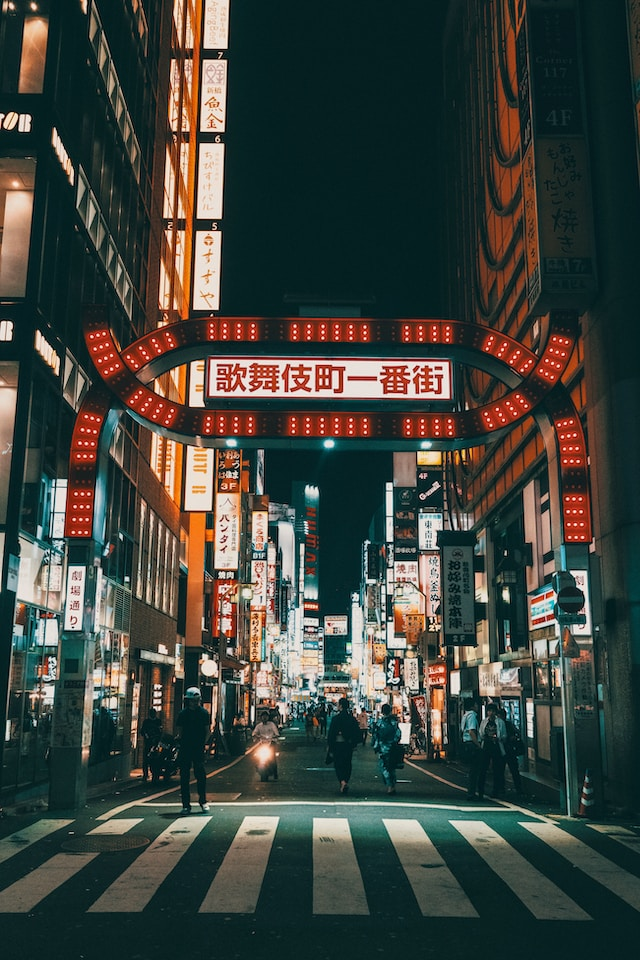
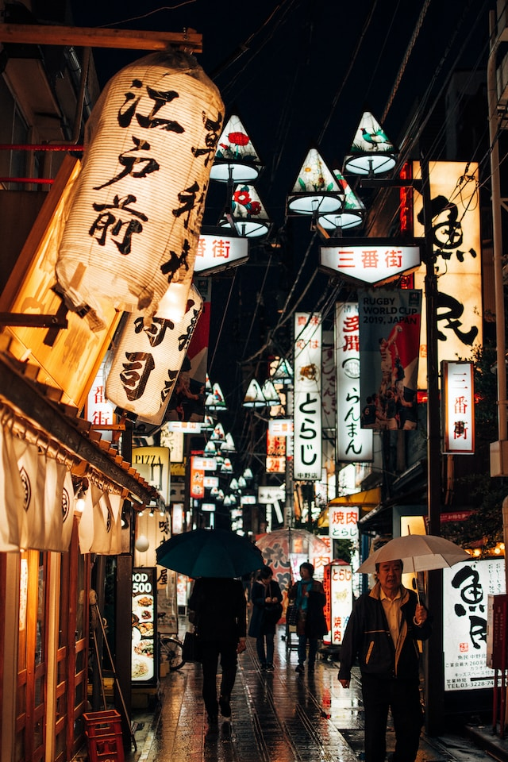

My top favorite activties to do in Tokyo, Japan

Come walk the famous and most busy street of all of Japan!
Shibuya crossing is a pictureest crossing and you can view the famous 109 building

Visit the night life of Shinjuku, at night the distrct comes to life.
Visit Kabukicho District filled with neon lights

Shop till you drop at Nakano Broadway! Or visit the vibrant resturants
Nakano is famous for its shopping, food, and night life.